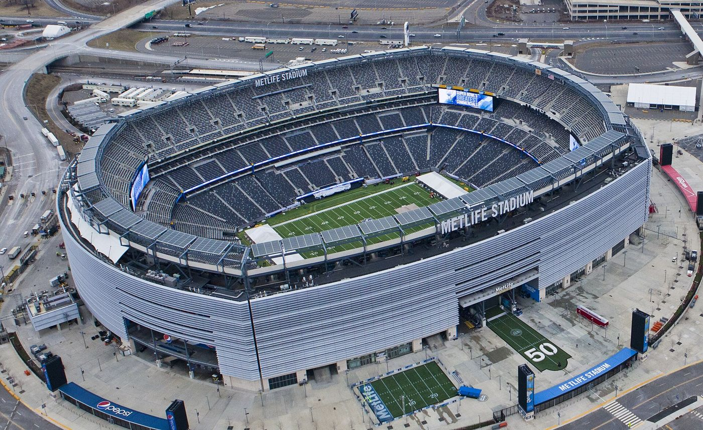

Anteprima · NFL · Week 11
I Giants di Harbaugh alla prova dei Jaguars lanciati
Jacksonville Jaguars @ New York Giants · 22/11/2026, ore 22:25 italiane · MetLife Stadium
Domenica 22 novembre, alle 22:25 italiane, il MetLife Stadium ospita una partita spostata nella fascia nazionale del pomeriggio americano, e non per caso. I Jaguars arrivano 7-2 e primi nella AFC South, i Giants 5-3-1 e primi nella NFC East: due squadre in testa alla propria division, con alle spalle stagioni molto diverse.
La rinascita dei Giants porta la firma di John Harbaugh, al primo anno dopo Brian Daboll e dopo un campionato chiuso 4-13. Il ruolo di quarterback è passato per più mani, da Jameis Winston a Jaxson Dart, fino a J.J. McCarthy, arrivato meno di due mesi fa e già apprezzato dal suo allenatore. Nell'ultima partita ha lanciato 293 yard, ma i Giants hanno perso 24-21 contro i Commanders: per la prima volta in stagione non sono riusciti a difendere un vantaggio nell'ultimo quarto. Attorno a lui ci sono Malik Nabers, Isaiah Likely e Cam Skattebo, corridore in netta crescita.
Jacksonville arriva con tre vittorie di fila e uno degli attacchi più prolifici della lega. Trevor Lawrence ha lanciato ventuno touchdown e appena cinque intercetti, e ha trovato in Parker Washington il ricevitore più pericoloso: contro i Titans ha preso 152 yard. Anche la difesa è tra le più solide. Il dubbio riguarda Bhayshul Tuten, il miglior corridore, che in settimana non si è allenato per un problema alla caviglia.
Nell'ultimo precedente, nel 2022 a Jacksonville, vinsero i Giants 23-17. Stavolta partono favoriti i Jaguars: per i Giants è l'occasione di dimostrare che il primo posto nella NFC East non è un caso.
Leggi su PureStats con meteo e numeri.jpg){kind=link}